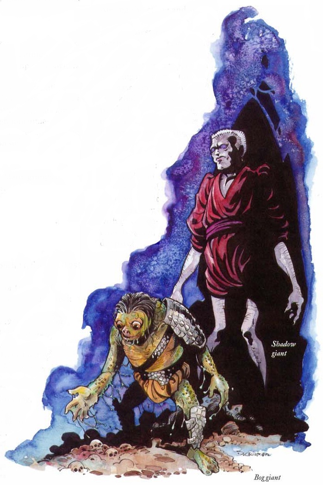

巨人是有着比他们那巨大的体型更加强大力量的人形生物。仅仅通过单纯的决心和蛮力他们就大有可为。他们大多依靠自己的力量解决问题，并且那些无法用他们的肌肉克服的困难一般都不值得烦扰。巨人会对那些惹怒或是对抗他们的人造成巨大的伤害，但他们也能够在帮助他们的盟友时提供有力支持。
许多巨人以捕猎或是从那些更小，更弱的存在处掠夺为生。少数不那么残忍的巨人会种植和喂养他们生存所需的谷物和牲畜。
所有巨人都说巨人语。那些智力值至少为10的巨人还会说通用语。
巨人渴望肉搏。他们偏爱大号武器，特别是双手武器，并以令人钦佩的技艺挥舞它们。假如他们可以的话，他们会相当狡猾的利用远程攻击弱化敌人。巨人最喜欢的远程武器是巨大的岩石块。
投石（Rock Throwing）（特异能力）：成年的巨人都是熟练的掷石者，无论男女巨人在投掷石块时的攻击掷骰上都有+1种族加值。体型至少为大型的巨人可以投掷重40到50磅不定的石块（小型物体）至多五倍射程增量远。（射程增量为120英尺。）超大型的巨人可以投掷重60到80磅的石块（中型物体）。
接石（Rock Catching）（特异能力）：体型至少为大型的巨人可以接住小型，中型或是大型的石块（或是类似形状的抛掷物）。超大型可以接住至大为超大型的石块。每轮一次，正常情况下会被石块击中的巨人可以做一次反射豁免以一个自由动作接住它。接住石块的DC基于石块的大小（见下表）。假如抛射物在攻击掷骰上有加值，该DC也会提升相同的数值。巨人必须意识并且要对该攻击有所准备。
石块大小 DC 小型 15 中型 20 大型 25 超大型 30
大型巨人（水栖）

| 生命骰： | 8d8+32（68hp） |
| 先攻： | +0 |
| 速度： | 30英尺，游泳40英尺 |
| 防御等级： | 19（-1体型，+3革甲，+7天生），碰触9，措手不及19 |
| 基本攻击／擒抱： | +6/+17 |
| 攻击： | 超大型长矛+13近战或投石+6远程 |
| 全力攻击： | 超大型长矛+13/+8近战或投石+6远程 |
| 伤害： | 超大型长矛2d6+10，投石1d6+7 |
| 面宽／触及： | 10英尺/10英尺 |
| 特殊攻击： | 投石 |
| 特殊能力： | 黑暗视觉60英尺，昏暗视觉，接石 |
| 豁免： | 强韧+12，反射+2，意志+2 |
| 属性： | 力量24，敏捷11，体质19，智力6，感知11，魅力14 |
| 技能： | 躲藏+4*，聆听+2，侦查+2，游泳+15 |
| 专长： | 警觉，强韧加强，军用武器精通（长矛）（B），武器专攻（长矛） |
| 地域： | 任意地表，水栖和地底 |
| 组织： | 单独，组（2-5），团（6-9加35%平民），狩猎/劫掠队（6-9加1-2巨鳄）或部落（21-30加1-3长老，2-12巨鳄，12-22蜥人族和35%平民） |
| 挑战等级： | 6 |
| 宝物： | 标准 |
| 阵营： | 通常中立 |
| 进化： | 根据角色职业 |
泥沼巨人是出没于湿地和沼泽中狩猎诸如黑龙这样的危险捕食者的腼腆隐居生物。
他们是最小的巨人中的一种，站立时约10英尺高，体重最大600磅。他们是种丑陋的，令人难以接受的生物，有着斑驳的青蛙似的皮肤以及像绳子一样的黑色长发。泥沼巨人手指和脚趾上均有蹼，这使得他们可以以比在路上行走更快的速度在水中游动。无论男女常见衣物都是鳄鱼皮制的革甲。
泥沼巨人的背包中装有2d4岩石，1d4+2普通物品以及巨人的个人财产。这些财产一般都是脏兮兮吸饱水的用旧物品，它们来源于那些被巨人当作食物猎杀的存在，并且其中经常包含有皮毛和皮革的碎片，骨头还有牙齿。
智力足够高的泥沼巨人一般在通用语之外还会龙语。
因为他们可以在水下呼吸，因而泥沼巨人喜欢在奇袭敌人之前通过游泳先接近敌手。在沼泽区域伏击猎物时他们会利用他们的天然伪装来获得优势。一些泥沼巨人模仿鳄鱼将敌人擒抱住拖入水下直至其溺水。
技能：泥沼巨人在任何执行特技动作或是规避危险的游泳检定上都有+8的种族加值。在游泳检定中它总可以取10，即使处于匆忙状态或是被威胁时也是如此。泥沼巨人在躲藏检定上有+4种族加值。*在沼泽区域，泥沼巨人躲藏检定上的种族加值会提升至+8。
泥沼巨人社会（Bog Giant Society） 泥沼巨人只出没于沼泽和湿地之中。他们大部分时间都花在狩猎，聚会和吞食腐肉上。他们会在倒下的原木和藤本植物之中建造粗糙的临时居所。
泥沼巨人既崇敬着又狩猎着鳄鱼，短吻鳄以及其他的大型爬虫类。大多数部落都会饲养"宠物"鳄鱼拴在他们营地周边。泥沼巨人和蜥人族之间关系友善，虽然有时两个种族会因食物短缺而产生冲突。泥沼巨人鄙视巨魔，只要发现他们就会发动攻击。
泥沼巨人角色（Bog Giant Characters） 泥沼巨人天赋职业是巡林客。许多泥沼巨人的队伍中都既有德鲁伊又有巡林客。
超大型巨人
| 生命骰： | 18d8+144（225hp） |
| 先攻： | +7 |
| 速度： | 50英尺 |
| 防御等级： | 28（-2体型，+3敏捷，+17天生），碰触11，措手不及25 |
| 基本攻击／擒抱： | +13/+34 |
| 攻击： | 超大型钉头锤+24近战或超大型强力复合短弓（+4力量加值）+14远程或投石+15远程 |
| 全力攻击： | 超大型钉头锤+24/+19/+14近战或超大型强力复合短弓（+4力量加值）+14/+9/+4远程或投石+15远程 |
| 伤害： | 超大型钉头锤2d8+19，超大型强力复合短弓（+4力量加值）2d6+4，投石1d6+13 |
| 面宽／触及： | 15英尺/15英尺 |
| 特殊攻击： | 夺命攻击，投石，偷袭+4d6，类法术能力 |
| 特殊能力： | 盲视60英尺，视线躲藏，弱光，昏暗视觉，接石 |
| 豁免： | 强韧+19，反射+9，意志+8 |
| 属性： | 力量36，敏捷17，体质26，智力11，感知14，魅力19 |
| 技能： | 交涉+6，躲藏+16，跳跃+18，聆听+9，潜行+8，察言观色+7，侦查+9 |
| 专长： | 警觉，顺势斩，战斗反射，精通先攻，近程射击，猛力攻击，精准射击 |
| 地域： | 任意地表和地底 |
| 组织： | 单独，成对或家庭（2-8加35%平民加1个7-10级的术士） |
| 挑战等级： | 18 |
| 宝物： | 双倍标准 |
| 阵营： | 通常守序邪恶 |
| 进化： | 根据角色职业 |
在粗鲁和单线条的众多巨人种族中，幽影巨人拥有一种独特的特质：敏锐。甚至连其他巨人都畏惧和憎恨着他们，对于他们自己的同族来说他们是出了名的谋杀者，窃贼和刺客。他们居住在阴暗交替的区域，包括那些众所周知接近阴影位面的地域。
幽影巨人站立时约20英尺高且体重在4000磅左右。他虽瘦但很结实，看上去很憔悴。但是与其消瘦憔悴的外表不同的是，事实上他们非常强壮和健康。男性巨人都有着纯白色的头发，而女性巨人的发辫却总是乌黑一片。幽影巨人的双眼有着没有星星的夜空般的颜色。幽影巨人穿着简练，因其冷酷的性格，其衣物主要是黑色和血红色。
幽影巨人的背包中装有1d2石块，1d6+4普通物品以及巨人的个人财产。个人财产通常包括精致的雕像，宝石和艺术品。
幽影巨人敏捷且难以捉摸。它们从黑暗中发动攻势然后再撤退回黑暗中去。他们很少直接攻击并且相对于近战来说他们更喜欢远程攻击。
幽影巨人会首先攻击那些使用昼明术法术的敌人，然后他们会对其他使用着备用光源的对手穷追猛打。在进入近距离搏斗前他们会使用他们的深幽黑暗术能力。
夺命攻击（Death Attack）（特异能力）：若幽影巨人观察对手3轮后以近战武器进行偷袭，而且成功造成伤害，则该次偷袭还有附加效果，可以麻痹或杀死对手（由巨人任选其一）。在观察对手时，幽影巨人可以进行其他行动，但注意力必须保持在对方身上，而且不能被目标发现或察觉敌意。假如受此攻击者在进行对抗死亡效果的强韧检定（DC=10+1/2幽影巨人的HD+幽影巨人的智力调整值）上失败其就会死亡。假如对抗麻痹效果的豁免检定失败，受害者会陷入无助状态并且无法行动1d6加每幽影巨人2HD1轮。若受害者的豁免检定成功，则此次攻击视为正常偷袭攻击。一旦幽影巨人观察满3轮，其必须在接下来的3轮内发动夺命攻击。若夺命攻击尝试了但是失败了（对方通过检定），或者是幽影巨人观察结束后3轮内没能发动攻击，则需重新观察3轮，巨人才能再次进行夺命攻击。
偷袭（Sneak Attack）（特异能力）：每当幽影巨人的目标失去敏捷加值，或当目标被幽影巨人夹击时，幽影巨人成功的近战攻击将额外造成4d6点伤害。
类法术能力：任意――朦胧术，深幽黑暗术，影法术，幽影塑能术，影行术。施法者等级18级；豁免DC 14+法术等级。
盲视（Blindsight）（特异能力）：幽影巨人行动和战斗时不仅靠视觉，还能通过利用听觉和嗅觉来探知周边的世界。该能力使其能够识别60英尺内的物体和生物。幽影巨人通常无需做侦查或聆听检定就能注意到在他盲视范围里的生物。
视线躲藏（Hide in Plain Sight）（超自然能力）：只要幽影巨人在某种阴影10英尺范围内，他就可以在事实上没有任何掩体的开阔地带上隐藏自己。当然他无法藏在他自己的影子里。
弱光（Light Sensitivity）（特异能力）：当曝露于日光或等同于昼明术法术的光源条件下时，幽影巨人在所有攻击掷骰，豁免，检定和伤害掷骰上受到-2士气减值。
技能：幽影巨人在躲藏检定上有+4种族加值。*在阴影区域，该加值提升至+8。
幽影巨人社会（Shadow Giant Society） 即使在一般排外的巨人种族之中，幽影巨人也是数一数二的隐秘和疑心。他们喜欢独居生活，虽然有些会出于需要而组成团队。稀少的定居下来的幽影巨人一般都把家安在地底。
幽影巨人比其他巨人有脑子和好奇得多，并且他们像收集财富一样搜集知识。他们对于谋杀毫无内疚，并且众所周知的是他们会将杀死其他巨人当作服务承包出去。因为这种名声，大多数巨人看到幽影巨人就会攻击他们――风暴巨人特别鄙弃他们。
幽影巨人角色（Shadow Giant Characters） 幽影巨人的天赋职业是游荡者。大多数幽影巨人队伍中都既有游荡者又有术士。